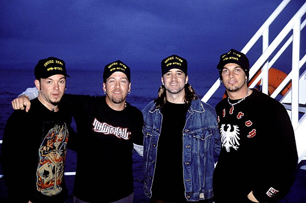
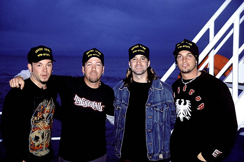

Creed é uma banda de post-grunge estadunidense formada em 1994 na cidade de Tallahassee, originalmente idealizada pelos amigos Scott Stapp e Mark Tremonti, tendo Scott Phillips e Brian Marshall.
 
